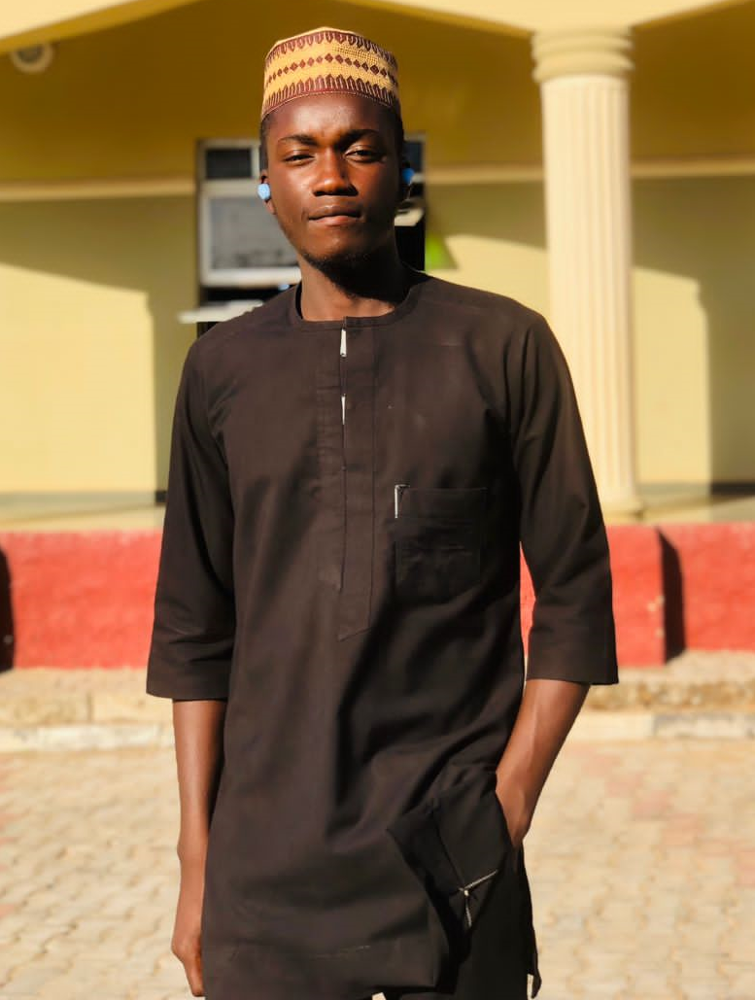

CONTACT ME:


I am

I'm Ajik Philip Danny — a Computer Science student at Plateau State University Bokkos, Nigeria, building my career at the intersection of cybersecurity, Python, and Web3. Over the past year I've earned 15+ certifications across cybersecurity and networking, completed 45+ days of TryHackMe SOC Level 1 training, and led Akathon Cy_Net — a cybersecurity learning community where I teach fellow students on campus. I'm currently on SIWES industrial training at Blockfuse Labs in Jos, completing a 200 Days of Code challenge in Web2 and Web3 development, and interning remotely at FlyRank AI. I document everything publicly — every lab, every project, every lesson — because I believe learning out loud compounds faster than learning in silence. My destination is CISO. My path starts here.
Actively training through TryHackMe SOC Level 1 — covering SIEM, EDR, SOAR, Wireshark, phishing analysis, network traffic analysis, detection engineering, and incident response. Frameworks studied include MITRE ATT&CK, Cyber Kill Chain, Unified Kill Chain, and the Pyramid of Pain.
Building a strong Web2 foundation through 200 Days of Code at Blockfuse Labs. Projects include login pages, profile pages, fintech landing pages, law firm landing pages, responsive dashboards, and portfolio websites — all built with HTML, CSS, Flexbox, CSS Grid, Nested Grid, and Media Queries.
Certified in AI Fluency: Framework & Foundations and AI Fluency for Students — both by Anthropic. Actively exploring the intersection of AI and cybersecurity through my internship at FlyRank AI.
Lead of Akathon Cy_Net — a cybersecurity niche under the Akathon community where I teach networking and security to fellow students at Plateau State University Bokkos.